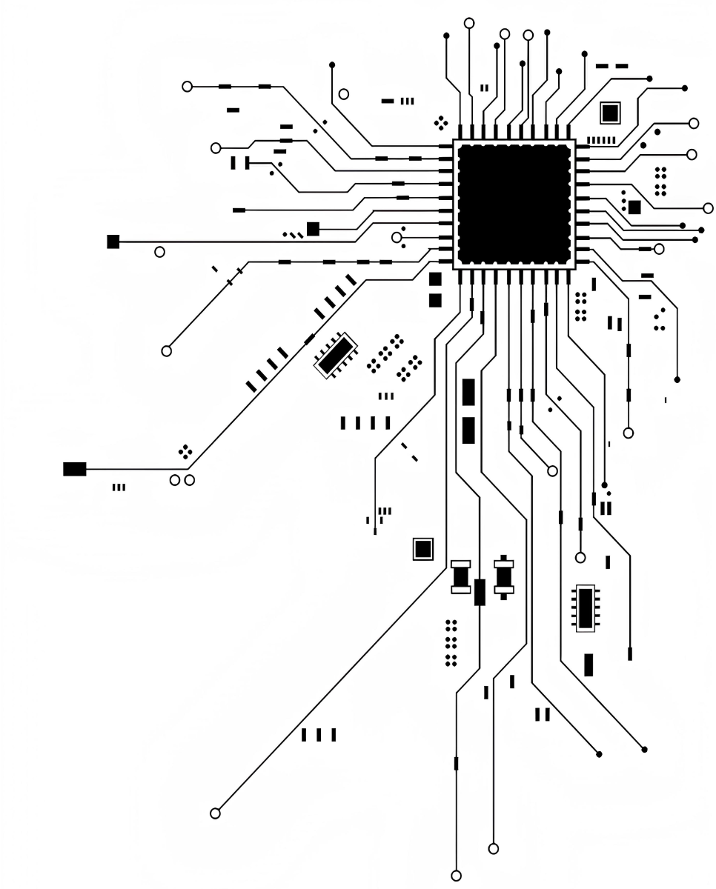

<div class="tabs-info-container">
  <div class="info-wrapper departments_info-wrapper">
    <article class="info-article departments_info-article">
      <p class="info about_info">
      It is one of the most prestigious departments of the Igor Sikorsky
      Kyiv Polytechnic Institute of Applied Systems Analysis, which was
      the first in Ukraine to start training specialists in computer-aided
      design systems in 1972. The Department of SP trains specialists for
      research, design and organizational and managerial activities in the
      field of application of modern information technologies in the design
      of various objects of the artificial human environment and informatization
      of the functioning of organizations and institutions.
      </p>
    </article>
    
  </div>
</div>